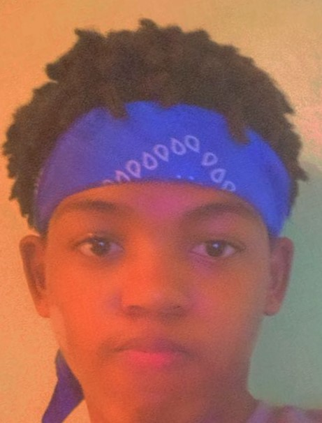

About me

Hello, I'm Dawayne Mullings, a 20-year-old resident of Trelawny.
My passions in life revolve around the exciting world of computer science,
but I'm not just a techie; I also find immense joy in connecting with the natural
environment and its wonders.
In my free time, you'll often find me behind the wheel of a manual car, savoring
the art of precision and control on the road. I'm equally at home behind a computer
screen, where I indulge my love for coding and problem-solving. Video games are
another one of my guilty pleasures, and I can easily get lost in the immersive worlds
they offer.
As a computer science student, I'm on a journey to make a meaningful impact in my field.
I believe that technology can transform lives and create positive change, and I'm
determined to be part of that movement. One thing that sets me apart is my unwavering
support for others. Whether it's teaching, learning, or assisting, I'm always eager to
collaborate and help those around me.
So, if you ever want to chat about coding, go for a scenic drive, explore the latest
video game releases, or simply share your love for nature, feel free to reach out.
I'm here to connect, learn, and grow with you on this incredible journey called life.
Dawayne Mullings
~Aspiring Software Engineer